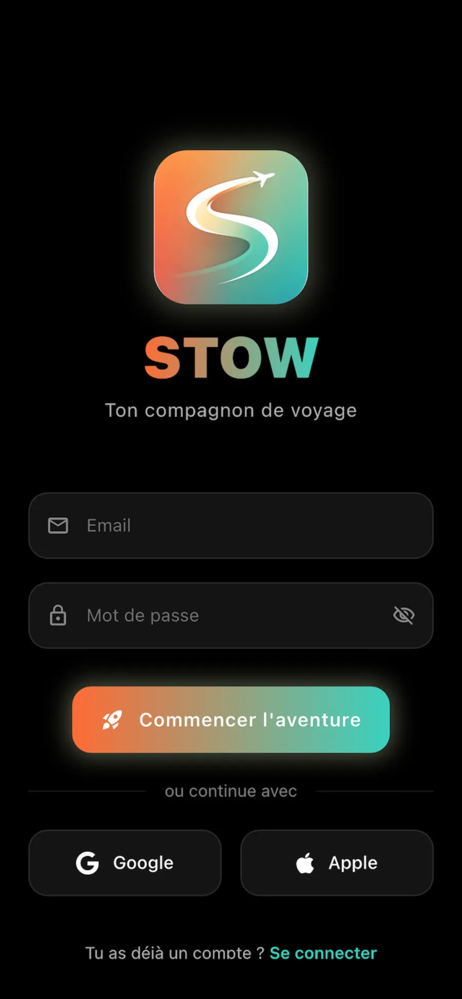
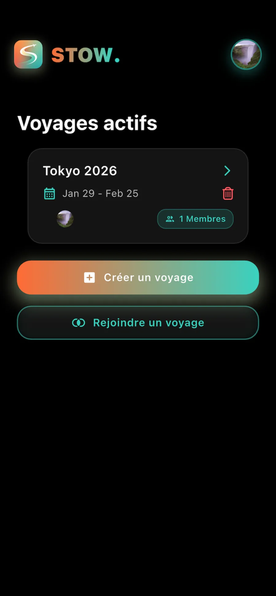
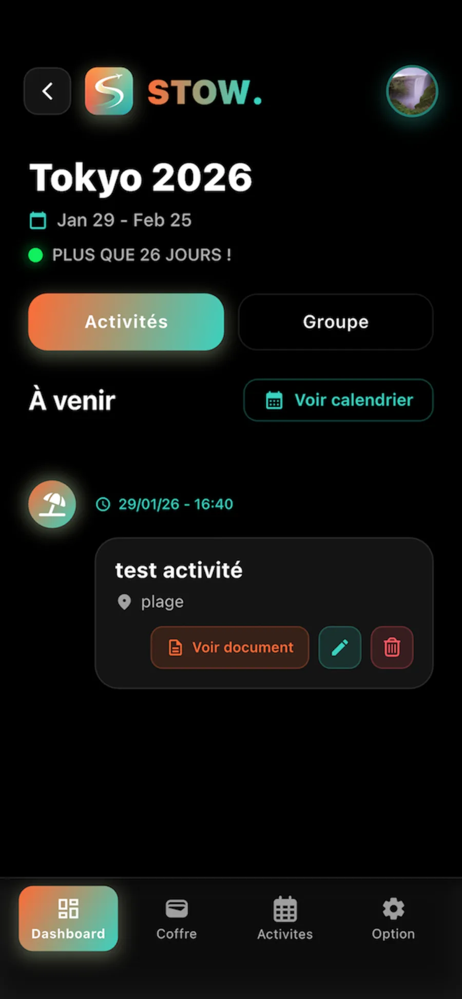
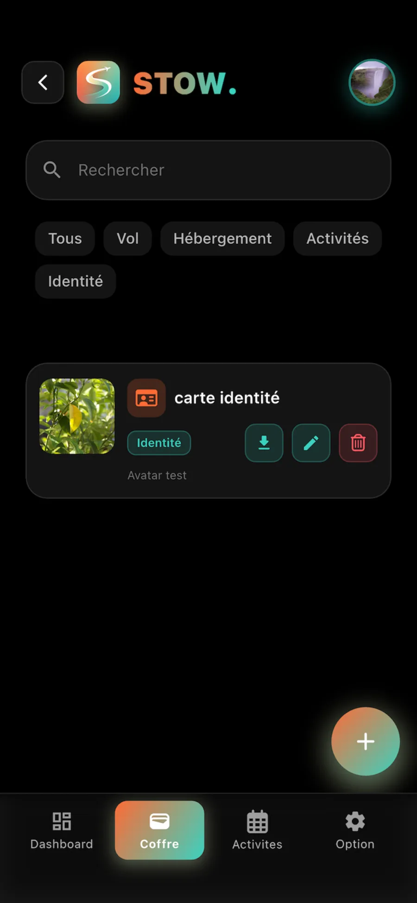
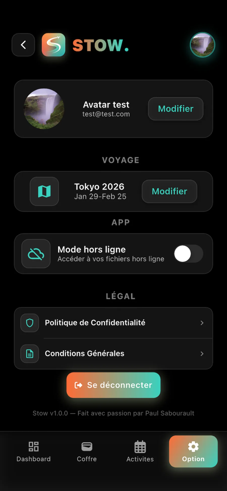

App
STOW
Le coffre-fort des voyages en groupe
STOW est le coffre-fort des voyages en groupe : tous les documents importants, billets, réservations, passeports, au même endroit, partagés avec le groupe, et accessibles même hors ligne.

STOWL'idée
WhatsApp, c'est pour les memes. STOW, c'est pour vos billets.
01 Le pourquoi
L'idée est née d'un vrai voyage entre potes. Chercher un PDF perdu dans WhatsApp au moment où on en a besoin, à la douane, au sous-sol de l'aéroport, sans réseau, c'est le genre de galère qui n'arrive qu'au pire moment. J'ai voulu un endroit dédié où ne vivent que les documents du voyage, accessibles par tout le groupe.
“ Vos documents de voyage, tous au même endroit. Même sans réseau. ”

02 La démarche
a.L'union fait le rangement
On crée un voyage, on invite ses compagnons avec un code, et chacun ajoute ses documents. Tout le groupe accède aux mêmes fichiers.
b.Accès hors ligne, le vrai
Pas de Wi-Fi à la douane ? Les documents restent accessibles, téléchargés en local, lecture garantie sans réseau.
c.Chaque doc à sa place
Types de documents configurables, visionneuse PDF native, planning et activités, de quoi organiser tout le voyage.
d.Simplicité radicale
Connexion Apple ou Google, verrouillage biométrique, fichiers ajoutés en deux clics.
STOW est développée en Flutter (iOS et Android depuis une seule base de code), sur Firebase. Publiée sur l'App Store, avec son propre site. Un produit mené du concept jusqu'au déploiement.
Galerie


